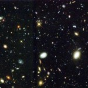

Рай или Небесный
Иерусалим: каков он?
Под
небом голубым есть город золотой,
С прозрачными вратами и яркою звездой,
А в городе том сад, все травы да цветы,
Гуляют там животные невиданной красы…
Анри Волохонский ”Небесный
Иерусалим”
|
Образец Небесного
Иерусалима не просто предшествует
земному строительству — он расположен
в идеальном (небесном) «краю», находящемся
в вечности. Именно это и провозглашает
Соломон:
«Ты приказал мне построить
храм во славу твоего святого Имени, а
также алтарь во граде твоем, по образцу
святой скинии, которую ты уже заранее
подготовил»
(Второканоническая Книга
Премудрости Соломоновой, 9, 8). |
|
 |
ПРИТЧА
Однажды
умер великий царь. Ангел повел его в
долгий путь. Наконец они остановились
перед воротами на небеса. Ангел спросил
царя:
- Почему
я должен впустить тебя в эти ворота?
- Потому
что на земле я был известным правителем,
каждый знал мое имя, - ответил тот.
- Это
недостаточная причина, - сказал ангел,
- назови другую причину, по которой я
должен впустить тебя в эти ворота.
- Потому
что я помогал многим бедным!
- Это
тоже недостаточная причина.
- Потому
что я был крещен и мне дали новое имя.
- И
это недостаточная причина.
Царь на минуту задумался, а потом
ответил:
- Потому
что я исповедовал Иисуса Христа своим
Спасителем, омыл свои царские одежды
кровью Агнца, и мое имя записано в Книге
жизни!
-
Это хорошая причина, - ответил с улыбкой
ангел. - Новый Иерусалим предназначен
именно для таких людей! Бог не впустит
на небеса посторонних, чтобы жить с Ним
на небе, нужно знать Его на земле, иначе
Он скажет: «Я никогда не знал вас, отойдите
от Меня делающие беззаконие» (Мтф. 7:23).
Полагаю, что
самое полное и прекрасное описание
небесного Иерусалима содержится в
Апокалипсисе.
Позволю себе напомнить всем содержание
главы
21 Откровений Ивана Богослова.
И увидел я новое небо и новую
землю; ибо прежнее небо и прежняя земля
миновали, и моря уже нет.
И
я Иоанн увидел святой город Иерусалим,
новый, сходящий от Бога с неба,
приготовленный как невеста, украшенная
для мужа своего.
И
услышал я громкий голос с неба, говорящий;
се, скиния Бога с человеками, и Он будет
обитать с ними; они будут Его народом,
и Сам Бог с ними будет Богом их;
И
отрет Бог всякую слезу с очей их, и
смерти не будет уже; ни плача, ни вопля,
ни болезни уже не будет; ибо прежнее
прошло.
И
сказал Сидящий на престоле: се, творю
все новое. И говорит мне: напиши; ибо
слова сии истинны и верны;
И
сказал мне: совершилось! Я есмь Альфа
и Омега, начало и конец; жаждущему дам
даром от источника воды живой;
Побеждающий
наследует все, и буду ему Богом, и он
будет Мне сыном;
Боязливых
же и неверных, и скверных и убийц, и
любодеев и чародеев, и идолослужителей
и всех лжецов – участь в озере, горящем
огнем и серою; это – смерть вторая.
И
пришел ко мне один из семи Ангелов, у
которых было семь чаш, наполненных
семью последними язвами, и сказал мне:
пойди, я покажу тебе жену, невесту Агнца.
И
вознес меня в духе на великую и высокую
гору и показал мне великий город, святой
Иерусалим, который нисходил с неба от
Бога:
Он
имеет славу Божию; светило его подобно
драгоценнейшему камню, как бы камню
яспису кристалловидному;
Он
имеет большую и высокую стену, имеет
двенадцать ворот и на них двенадцать
Ангелов, на воротах написаны имена
двенадцати колен сынов Израилевых:
С
востока трое ворот, с севера трое ворот,
с юга трое ворот, с запада трое ворот;
Стена
города имеет двенадцать оснований, и
на них имена двенадцати Апостолов
Агнца.
Говоривший
со мною имел золотую трость для измерения
города и ворот его и стены его.
Город
расположен четвероугольником, и длина
его такая же, как и широта. И
измерил он город тростью на двенадцать
тысяч стадий; длина и широта и высота
его равны.
И
стену
(ширину) его измерил во сто сорок четыре
локтя, мерою человеческою, какова мера
и Ангела.
Стена
его построена из ясписа, а город был
чистое золото, подобен чистому стеклу.
Основания
стены города украшены всякими драгоценными
камнями: основание первое – яспис,
второе – сапфир, третье – халкидон,
четвертое – смарагд,
Пятое
– сардоникс, шестое – сердолик, седьмое
– хризолит, восьмое – вирилл, девятое
– топаз, десятое – хрисопрас, одиннадцатое
– гиацинт, двенадцатое – аметист.
А
двенадцать ворот – двенадцать жемчужин:
каждые ворота были из одной жемчужины.
Улицы
города
- чистое золото, как прозрачное стекло.
Храма
же я не видел в нем; ибо Господь Бог
Вседержитель – храм его, и Агнец.
И
город не имеет нужды ни в солнце, ни в
луне для освещения своего; ибо слава
Божия осветила его, и светильник его –
Агнец.
Спасенные
народы будут ходить во свете его, и цари
земные принесут в него славу и честь
свою.
Ворота
его не будут запираться днем, а ночи
там не будет.
И
принесут в него славу и честь народов;
И не войдет в него ничто нечистое, и
никто преданный мерзости и лжи, а только
те, которые написаны у Агнца в книге
жизни.
Безусловно,
здесь много иносказаний и непонятного
для нас (например, нет такого драгоценного
камня, как яспис кристаллолвидный, тут
подразумевается Слава Божия; жена-невеста
Агнца – это сам Небесный Иерусалим;
трое ворот с каждой стороны символизируют
Святую Троицу; ну и т.д.); посему я решил
для начала разобраться хотя бы с размерами
сего града Божия и вот, что получилось.
Стадий,
стадия (греч.
στάδιον)
— единица измерения расстояний в древних
системах мер многих народов, введённая
впервые в Вавилоне
и затем получившая своё греческое
название. Стадий
представлял собой расстояние, проходимое
человеком спокойным шагом за время
восхода солнца, то есть в течение 2 минут.
В большинстве систем мер это расстояние
равнялось 600 футам.
Bpoде
бы все понятно, но имеются различные
значения стадия, например: вавилонский
= 194 м
, греческий
= 178 м олимпийский
= 192,27 м , египетский
= 172,5 м, стадий системы фараонов = 209,4 м,
птолемеевский и римский = 185 м
Так
вот, в олимпийский год примем за стадий
его олимпийское значение в 192,27
м и
проведем простейшие арифметические
вычисления относительно Небесного
Иерусалима, вооружившись этими данными.
Напомню вам, что:
“И
измерил он город тростью на двенадцать
тысяч стадий; длина и широта и высота
его равны.”
А
теперь произведем простейшие арифметические
расчеты:
Толщина
стены
144 локтя x
0.44м = 63 м (ширина Вел китайской стены
– 5.5м)
192,27
х 12000 = 2307, 24 км
2307.24 х
2307.24 = 5323356.418 км
2
Пл.Украины
= 603628 км2
;
5323356 : 603628 = 8.8 time
more
1 этаж
~ 3m.
Тогда этажность стены – 2307240 : 3 = 769080
levels
.
Ну как результаты, впречатляют?
И еще,
новости, для неверующих это из рубрики
хотите верьте, хотите нет.
Город
плывущий в космосе.
Двадцать шестого
декабря 1994 г. в НАСА поднялась большая
шумиха. После расшифровки серии снимков,
с телескопа «Хаббл»,
на пленках явно проявился огромный
белый город, парящий в Космосе (Город
плывущий в космосе).
Говорят, что представители агентства
не успели быстро отключить свободный
доступ к веб-серверу телескопа и
засекреченные фото снимки на некоторое
время стали доступны пользователям
всемирной сети.
Что же обнаружили
астрономы на этих фантастических
фотоснимках. В начале это было лишь
небольшое туманное пятнышко. Но когда
профессор университета штата Флориды
Ken
Wilson
решил рассмотреть фотоснимок и в
присовокупил к оптике «Хаббла» ручную
лупу, он обнаружил, что данное пятнышко
имеет странную структуру, невозможную
объяснить ни дифракцией в линзовом
наборе телескопа, ни даже помехами в
канале связи при передаче кадра на
Землю. После небольшого оперативного
совещания было вынесено решение переснять
указанный Уилсоном участок неба с
максимальным для телескопа «Хаббла»
разрешением.

плывущий остров
- обитель Творца ?
Гигантские многометровые
линзы телескопа сфокусировались на
самом далеком уголке Вселенной, который
только доступен обзору телескопа.
Несколько характерных щелчков затвора
фотоаппарата, и «пятнышко» предстало
перед ошеломленными учеными на большом
экране проекционной установки в
лаборатории управления «Хабблом»
сияющей неописуемой структурой, похожей
на фантастический город, некий гибрид
свифтовского «летающего острова» Лапуты
и научно-
фантастических городов будущего.
плывущий город фото с телескопа
Размеры этого Города,
по его космическим меркам, поистине
поражают. Ни один из известных нам
небесный объект не может соперничать
с этим исполином. Наша планета в этом
Городе была бы просто-напросто песчинкой
на пыльной дороге космического проспекта.
Конструкция, раскинувшаяся в Космосе
на многие миллиарды километров, сияющая
неземным светом, вот, что такое Плывущий
Город.
Он единогласно, всеми здравомыслящими
учеными, был признан Обителью Творца,
тем местом, где только и может находиться
престол Господа Бога. Представитель
НАСА пояснил, что Город ни как не может
быть населен в привычном и обыденном
смысле этого слова и, вероятнее всего,
в нем живут переселенные души умерших
когда то людей.
Куда же движется —
и движется ли он в принципе — этот
гигант. Компьютерный анализ снимков,
полученных с телескопа «Хаббла», показал,
что движение супер Города в общем
совпадает с движением окружающих его
галактик. Таким образом, относительно
Земли все происходит в рамках известной
теории Большого Взрыва и не противоречит
известным космогеническим теориям.
Однако же при 3-х мерном моделировании
этой удаленной части Вселенной выяснился
потрясающий факт, это не часть Вселенной
удалена от нас, а мы — от нее, ибо земля
находится где-то на задворках Вселенной.
Почему же точка отсчета перенесена в
этот Город плывущий в космосе. Потому
что именно данное туманное пятнышко на
снимках и оказалось в компьютерной
модели «центром Вселенной». Объемное
движущееся изображение достоверно
демонстрирует, что галактики-то
действительно разбегаются (вспомним
Доплеровское смещение), но именно от
той точки, в которой располагается этот
удивительный плывущий Город. Иными
словами, все галактики, вышли когда-то
именно из этой точки пространства
(вспомним теорию Большого взрыва), и
именно вокруг этого Города вращается
вся наша Вселенная. Во как. Только вот,
имеется вопрос к Фоме неверующему: а
кто же тогда устроил этот самый большой
взрыв?
А
что же будет после нас?
Что же ждет нас после
смерти? Каждый получает по вере, говорит
Писание. Христиане верят, что человек
при жизни выбирает, где он окажется: в
вечных мучениях в аду, или в вечном
блаженстве Царства Небесного. Все
зависит лишь от того, веришь в Иисуса
Христа или нет.
А самая правдивая из
книг – Библия говорит об этом так:
Филлипийцам (3:20, 21)
«Наше же жительство - на небесах, откуда
мы ожидаем и Спасителя, Господа нашего
Иисуса Христа,
Который
уничиженное тело наше преобразит так,
что оно будет сообразно славному телу
Его...”»
Евреям
(13:14) «…ибо
не имеем здесь постоянного града, но
ищем будущего. Церковь с восторгом
отправляется в Небесный Иерусалим на
брачную вечерю Агнца.»
Откровение
(21:9, 10) «И
пришел ко мне один из семи Ангелов … и
сказал мне: пойди, я покажу тебе жену,
невесту Агнца. И вознес меня в духе на
великую и высокую гору, и показал мне
великий город, святый Иерусалим, который
нисходил с неба от Бога.»
Как выглядит ад, мы
примерно представляем: и кинорежиссеры,
и писатели нередко брались за создание
его картин. Но что такое рай? Или что
такое Новый Иерусалим?
Рай.
Библейскому понятию "Рай"
соответствует греч. слово парадейсос,
заимствованное из дp.-пеpс.
языка, в котоpом
паридеза - это "огpада",
а также "то, что обнесено огpадой",
т.е. паpк
или сад. В этом значении слово пеpешло
во многие древние языки - евp.
пардес, аpам.
пардеса, гpеч.
парадейсос, - а из них, через латынь, в
совр. европ. языки.
Интересно
отметить, что в
Ветхом Завете
слово пардес ("pай")
вообще не встpечается,
но это не означает, что понятие "Р."
как таковое в ВЗ отсутствует. Здесь ему
соответствуют выражения "сад",
"сад в Едеме" или даже "сад
Господень" (Быт 2:8,10,15; ). До своего
гpехо-падения
люди жили в Р. в единении с Богом и в
безгрешной откpытости
дpуг
пеpед
дpугом.
После гpехопадения
они были изгнаны из Божьего сада Едема;
Из представлений
о тождественности Рая доисторич. времени
и Рая конца времен следовало, что в
промежутке между этими временами Рай
существует невидимо для нас. Когда-то
считали, что он находится на самом кpаю
земли, на востоке (см. Быт 2:8), на севеpе,
севеpо-западе
или западе или же на гоpе,
к-pая
возвышается до самого неба. С дp.
стоpоны,
существовало мнение, что со вpемени
гpехопа-дения
Адама Рай находится на небе, точнее, на
тpетьем
небе. Однако же все авторы апокалипсисов
сходятся в одном: в Раю пpебывают
души почивших пpаотцев,
а также всех избpанных
и пpаведников.
Души же умерших безбожников находятся
в шеоле, цаpстве
меpтвых
( Ад). В Новом
же
Завете Рай
упоминается пpежде
всего как место пpебывания
спасенных в период между смеpтью
и воскpесением
(Лк 23:43; 2Кор 12:4). По сути дела, о том же
говоpится
и в целом pяде
дpугих
мест Священного Писания. При этом,
нужно знать, что в Раю главное - не pайское
блаженство, но восстановление pазpуш.
общения с Богом. Вот почему вместо слова
"Рай" в Новом Завете используются
выpажения:
"лоно Авpаамово"
(Лк 16:22), "водвоpиться
у Господа" (2 Kop
5:8), "быть со Хpистом"
(Флп 1:23), "обитель Отца" (Ин 14:2) и
дp.;
О Рае же конца вpемен
прямо говоpится
в Oткр.
2:7. Здесь в описании Рая используются
ветхозаветные понятия и представления,
а также образы, созданные ветхозаветными
пророками: так, в обpазе
Небесного Иеpусалима
- Рай, как новая земля, пpимет
спасенных (Oткр
21:10 и след.; 22:1 и след.), дьявол будет
уничтожен (Oткр
20:10), стpаданий,
слез и смеpти
больше не будет (Oткр
21:4). Самым же пpекpасным
станет общение с Богом, в котоpое
тогда вступит каждый пpаведник:
"Он будет обитать с ними, и Сам Бог с
ними будет Богом их... Пpестол
Бога и Агнца будет в нем, и pабы
Его будут служить Ему... И узрят лице
Его... и Господь Бог освещает их; и будут
цаpствовать
во веки веков" (Oткр
21:3; 22:3 и след.).
Иже сумнящийся Фома наверняка скажет,
что не верит в рай, уж слишком сказочно
выглядит все, что довелось услышать об
этом месте! Но не торопитесь утверждать
подобное. Как-то к одному пастору подошел
парень и сказал, что не верит в Бога, на
что пастор ответил: «Расскажи мне, в
какого Бога ты не веришь, может быть и
я не верю в ТАКОГО Бога». О том, что
произойдет с нами после смерти, можно
сказать так же: «Расскажи, в какой рай
ты не веришь, может быть в такой рай
вообще не стоит верить?».
Если Рай представляется людям как место
на небе, где отдыхая парят в облаках,
разодетые во все белое, и всю вечность
не перестающие музицировать на маленьких
арфах наидостойнейшие, то неудивительно,
что многие не стремятся попасть туда.
На самом деле, Рай - не королевство из
мультфильма, не придуманная страна
чудес, но реальное место, где находится
престол нашего Всемогущего Творца. И
то, что приготовил на небе Господь для
верных Ему людей, настолько прекрасно,
что оказаться там будет великим благом
для каждого. Чтобы развеять лубочное
представление о рае, давайте обратимся
к единственно правдивому источнику –
Библии
и, согласно ей, попытаемся хоть на малую
толику представить то, что ожидает после
смерти настоящих христиан.
Почему мы,
когда говорим о Рае, употребляем слово
«небеса»? Потому что многие теологи
считают, что именно там он и находится.
Но где именно?
На самом деле, на основании изучения
данных Библии можно сделать вывод, что
реально существуют минимум три неба.
Первое небо это атмосфера - место, где
летают птицы, а тучи приносят дождь.
Второе небо - это безбрежная Вселенная,
напоненная звездами и планетами, которая
только кажется нам бесконечной. Но есть
еще и третье небо, это обитель Божия,
место, куда попадают верующие после
смерти, где Иисус сидит по правую руку
от Бога Отца, и где, надеюсь, и мы однажды
предстанем перед лицем Господа. Библия
говорит, что в конце обещанного Господом
тысячелетнего царствования Христа и
после суда у великого белого престола
небесный город с третьего неба опустится
на новую землю. И вновь сотворенные
новое небо, и новая земля будут уже
совершенными (Отк. 21:1-4). На этом новом
небе и заново созданной земле все
джостолйные дети Божьи будут жить вечно.
Город
Чудес: Небесный = Новый Иерусалим
Интересно
отметить, что описание в Ветхом Завете
земного города - Иерусалима упоминается
как место, где должно обитать имя Господа,
а значит и Сам Господь (3Цар. 8:29), и картины
будущего земного Иерусалима, когда в
последние дни гора Дома Господня будет
поставлена во главу всех гор (Исаии,
2:2; Мих 4:1) перекликается с известным и
содержащимся в Новом Завете изображением
Небесного Иерусалима - города мира,
«сошедшего от Бога с неба, украшенного
как невеста для мужа своего» где Божий
народ будет вечно жить вместе с Богом
«и Он будет обитать с ними; они будут
Его народом...И отрет Бог всякую слезу
с очей их, и смерти не будует уже, ни
плача, ни вопля, ни болезни уже не будет;
ибо прежнее уже прошло» (Откр 21:2-4).
Сказано: «...ибо прежнее уже прошло», что
сие означает? Оказывается, что еще одно
(очередное) улучшение мира или его
обновление не являются причиной
возникновения Небесного Иерусалима на
земле ибо, по-видимому, Богу надоело
обновлять погрязшую во грехе землю. Вот
почему, надо полагать, что лишь исчезновение
прежней земли освобождает место для
«...Нового Иерусалима нисходящего с неба
от Бога Моего» на новую землю (Откр
3:12). О том, что однажды земля, прекратит
свое существование предупреждает нас
еще Ветхий Завет: «...ибо небеса исчезнут,
как дым, и земля обветшает, как одежда,
и жители ее также вымрут» (Исаия, 51:6).
Но, исчезнувшая земля уступит место
новому творению Творца. Сказано: «Ибо
вот, Я творю новое небо и новую землю, и
прежние уже не будут воспоминаемы...»
(Ис 65:17). А во 2-м соборном послании апостола
Петра об этом событии говорится так:
«Придет же день Господень, как тать
ночью, и тогда небеса с шумом прейдут,
стихии же, разгоревшись, разрушатся,
земля и все дела на ней сгорят» (2Пет
3:10,13). И сотворит Бог новые небеса и
новую землю. И об этом прямо говорит Бог
устами святого Иоанна Богослова: «И
увидел я новое небо и новую землю; ибо
прежнее небо и прежняя земля миновали,
и моря уже нет» (Откр. 21.1).
Вот так, Новый
Иерусалим сойдет с неба, как зеркальное
отражение Небесного Иерусалима, на
совершенно новую же землю. Мы не знаем,
будет ли эта новая земля такого же
размера и формы, как и настоящая. Известно
лишь, что Иоанн не увидел храма в Новом
Иерусалиме, ибо сам Господь Бог и Агнец
Его Иисус и есть Храм. Известно также,
что на новом небе не останется ни солнца,
ни луны, ни звезд, ибо сказано: «И ночи
не будет там, и не будут иметь нужды ни
в светильнике, ни в свете солнечном, ибо
Господь Бог освещает их» (Откр. 22.5). И
еще: «И город не имеет нужды ни в солнце,
ни в луне для освещения своего, ибо слава
Божия осветила его, и светильник его —
Агнец» (Откр.21:23). Иисус станет и физическим
и духовным светом в этом новом мире.
Некоторые
богословы считают, что Новый Иерусалим
будет многоуровневым (вспомните, мы
подсчитали, что это будет 769000!!! Уровней,
или этажей) в форме куба или пирамиды,
на вершине которой будет восседать Сам
Бог. Например,
в Послании к Евреям говорится о том,
что: "...превознесенный выше небес"
Агнец Христос "...воссел одесную
престола величия на небесах" (Евр
7:26; 8:1).
Apriory,
и наверняка, мы можем утверждать лишь
одно - этот город слишком прекрасен,
чтобы описать его. Ни один глаз не видел
его! Ни одно ухо не слышало о нем все!
Человек (за исключением пророков) может
представить себе только то, что когда-либо
видел, вот почему наше воображение
ограничено, и мы не можем даже осознать,
какую великую красоту способен создать
Бог!
На земле улицы делают из бетона, асфальта.
В Новом же Иерусалиме мы сможем ходить
по улицам, cоделанным
из золота, прозрачного как стекло.
Вероятнее всего, и о золоте здесь
упоминается иносказательно, ибо золото
прозрачным не бывает, но
по
восприятию оно будет для всех именно
золотом.
Богатство, до которого люди никак не
могли дотянуться на земле, окажется у
них под ногами. Сейчас люди радуются
каждой жемчужине или бриллианту, и им
трудно себе представить целый город,
целиком сделанный из золота и драгоценных
камней. Но можете не сомневаться: чтобы
создать землю, Бог достал из кармана
всего лишь мелочь.
Некоторые, иже
сумнящиеся, скажут, что все, описанное
здесь, похоже на сказку. Но, не нужно
торопиться с выводами. Если мы чего-то
не видели, это еще не значит, что этого
нет. Наш Господь Бог действительно
обещал нам сказочную вечность! И об этом
прямо говорит нам Иисус: “Не видел того
глаз, не слышало ухо и не приходило то
на сердце человеку, что приготовил
Господь любящим Его” (1Кор 2:9)! Новый
Иерусалим Господь сравнивает с чистой,
непорочной невестой Агнца потому, что
его населяют святые люди! Святой город
предназначен для тех, кто живет по духу,
а не по плоти. Колдуны, знахари и
заклинатели принимают решение сотрудничать
с сатаной – они не смогут жить в святом
городе. Ни один лжец не войдет туда. Ибо
сказано: «Боязливых же и невернгых, и
скверных и убийц, и любодеев и чародеев,
и идолослужителей и всех лжецов – участь
в озере, горящем огнем и серою» (Откр.
21.8). Новый Иерусалим это большой дом
Отца и Бога нашего. Иисус назвал его
«домом Отца Моего».
Господь не случайно построил такой
большой дом. Он хочет, чтобы все прощенные
дети Его поселились здесь и жили бы
вместе с Ним. Всех рожденных свыше верных
Богу детей божьих Господь заберет из
среды людей к Себе, об этом сказано:
«Тогда будут двое на поле: один берется,
а другой оставляется; две мелющие в
жерновах: одна берется, а другая
оставляется. Итак бодрствуйте, потому
что не знаете, в который час Господь ваш
приидет» (Матф.24:40-43). Наверное многим
создание такой громадной драгоценности,
как Новый Иерусалим покажется затратным,
слишком дорогим подарком. Но у богатых
царей принято дарить дорогие подарки.
Побеждающие наследуют Дом Бога! Иисус
говорит: «Придите». Так что каждый из
нас волен сделать свой личный выбор,
где ему проводить вечность: здесь и с
Ним, или с Сатаной и в небытие.
И завершить
сегодняшнюю проповедь хочу словами из
22 главы «Откровений (стихи 20, 21)», где
сказано: «Свидетельстующий сие говорит:
ей, гряду скоро! Аминь. Ей, гряди Господи
Иисусе! Блдагодать Господа нашего Иисуса
Христа со всеми вами. Аминь»
Торонто, фефраля
20. 2010.
Владимир Заплишный.
Молитва покаяния
Отец
мой Небесный!
Ты
сотворил меня для Себя. Без Тебя нет
никакого смысла жить и нет самой жизни.
Как блудный сын, я возвращаюсь к Тебе.
Прости меня, грешника. Омой кровью Иисуса
Христа все мои грехи: большие и малые,
все мои преступления прости и будь со
мной. Я раскрываю сердце для Тебя, для
Святого Духа, для моего Господа. Войди
в него, я Твой навсегда, вовеки веков.
Сделай меня таким человеком, каким Ты
хочешь меня видеть. Дай мне новое сердце,
которое желало бы поступать праведно.
Прямо сейчас я принимаю Тебя, Иисус
Христос, Сын Божий, как Спасителя и
Господа в мое сердце и всю мою жизнь.
И
сейчас я отрекаюсь от дьявола, от отца
лжи, отрекаюсь вовеки, навсегда, отрекаюсь
во имя Иисуса Христа.
Отец
мой Небесный, я верю в Тебя, верю, что Ты
меня простил, верю, что Ты принял меня.
Благодарю Тебя. Я пронесу в своем сердце
эту молитву через всю жизнь. Аминь.
{kind=link}
{kind=link}
{kind=link}
{kind=link}